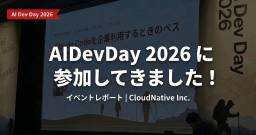
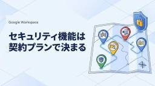

CloudNative BLOGs
https://blog.cloudnative.co.jp
株式会社クラウドネイティブの技術ブログ。ゼロトラスト、SaaS、AI、セキュリティなどの最新情報をお届けします。
フィード

#AIDevDay 2026 に参加してきました！
CloudNative BLOGs
AI Dev Day 2026にスポンサーとして参加したレポートです。ブースでのフィギュア無料配布の様子や、代表シンジによる登壇「Claude Codeを企業利用するときのベストプラクティス」の内容、講演資料、7/29開催の関連イベント情報をまとめました。
5時間前
Intune で Netskope Client を一括アンインストールする方法
CloudNative BLOGs
Intune の Win32 アプリを使って、Windows 端末から Netskope Client を一括アンインストールする方法を解説します。スクリプトのダウンロードから intunewin 化、Intune への登録、動作確認までの手順をまとめました。
5時間前


フルリモートの入社初日ってどんな感じ？
CloudNative BLOGs
フルリモートで入社した初日の流れと1週間のオンボーディングを、PCセットアップやNotion・Slack活用、各チームの顔合わせや質問対応方法など具体的に紹介し、新入社員が安心して業務を始められるポイントを解説する記事です
12時間前

AI-DLCとは？非エンジニアのPMが「AI駆動開発ライフサイクル」をかみ砕いてみた
CloudNative BLOGs
AI-DLC（AI駆動開発ライフサイクル）とは何かを、非エンジニアのPM目線でかみ砕いて解説します。AWSが提唱したこの方法論では「作る速さ」より「合意の速さ」が鍵になり、上流工程の会議こそ変わります。3つのフェーズとモブワークもやさしく紹介します。
13時間前

クラウドネイティブに入社しました！ オンプレミスからクラウドへ
CloudNative BLOGs
インフラ／サーバーエンジニア出身の柳原海士が、クラウドネイティブの Identity チームに入社。これまでのキャリア、オンプレからクラウドへ移りたかった入社の経緯、Identity／セキュリティ領域で挑戦したいことを整理しました。
14時間前

計上漏れも二重計上も原因は同じ。請求明細を目視でなく仕組みで守る
CloudNative BLOGs
1枚の請求書を明細ごとに複数の仕訳へ分けて計上していると、特定の行が消えたり二重に載ったりします。計上漏れも二重計上も原因は同じ「行の同一性を人の目で判断していること」。一意キー・差分・見張りの3点で、目視チェックを手元のExcelでできる仕組みに置き換える方法を解説します。
1日前
クラウドネイティブの顧客質問対応（ask運用）と仕組みについて
CloudNative BLOGs
本記事は、クラウドネイティブのAsk運用とDevチームが提供する質問受付・振り分け・回答・ナレッジ化の仕組みを解説し、アシスタントチームが毎朝のデイリーミーティングで迅速に担当を決定し、質問を確実に解決できる方法を紹介します。
2日前

Intuneでのワイプ・リタイヤ・削除の違いを【情シスに必要な範囲で】深掘る
CloudNative BLOGs
Intuneでのデバイス管理時に使う「ワイプ」「リタイヤ」「削除」の挙動と適用シーンを、所有形態別に解説し、情シス担当者が適切に選択できるよう支援します。
2日前

Google Workspaceのセキュリティはプランで決まる｜要件別のエディション選び
CloudNative BLOGs
Google Workspace のエディション別セキュリティ機能を整理し、要件から最適なプラン選定や見直し手順をIT 管理者向けに解説します。
2日前
勝手に立てたAI基盤に、クラウドの鍵が埋まっている｜Langflow脆弱性に学ぶシャドーAI統制
CloudNative BLOGs
Langflow CVE-2026-55255（IDOR）の実悪用がCISA KEVに登録されました。AIワークフロー基盤に埋め込まれた認証情報が狙われる構造と、シャドーAI基盤の発見・台帳化、シークレット外部化、オーナー不在対策を情シス視点で整理します。
4日前

Fabel 5やGPT5.6のようなAIの賢さより、権利無視のKimi K3という中国AIの脅威
CloudNative BLOGs
2026年7月16日リリースの中国製AI「Kimi K3」を、ベンチマークではなく「ガードレールの緩さ」の視点で検証します。macOS 27クローンのデモやK2.5の独立安全性評価、規制の非対称が企業のAI利用と統制設計に何を求めるかを整理します。
6日前
2026年07月版 TypeWhisperとローカルLLMで日本語音声入力（TypeWisper x Whisper Large V3 Turbo × Qwen3-32b） 1
1
CloudNative BLOGs
Whisper Large V3 Turbo（WhisperKit経由）とQwen3-32b（Ollama経由）を組み合わせ、すべての処理をMac上で完結させる完全ローカルの日本語音声入力環境を構築します。クラウドへ一切送信せず、APIキーなし、月額課金なしで高精度なディクテーションを実現する手順を、セットアップから競合比較まで解説します。
8日前

【IT投資は「福利厚生」にもなり得る】情シス出身の私が使う側に回って気づいたこと
CloudNative BLOGs
IT基盤への投資を福利厚生視点で捉え、AI検索やNotion・Slack活用による情報アクセスの快適化が従業員体験と生産性向上にどう寄与するかを、情シス担当者や経営層向けに解説します。
11日前
PMが娘のランドセル選びで学んだこと｜隠れた本音の見つけ方と、対立を着地させる合意形成
CloudNative BLOGs
娘のランドセル選びは、一見シンプルなのにちゃぶ台返しが大量に潜む調達プロジェクトでした。丸3ヶ月の泥沼、「6年間使うから」という要件の裏に隠れた本音、そして合意形成に使った5つの手を、PM目線で振り返ります。
12日前
読み取りはAIに、確定は人に——経理が引いた一本の線
CloudNative BLOGs
経理にAIを取り入れるとき最初に悩むのは「どこまで任せるか」。請求書処理を読み取りと確定に分け、読み取りはAI・最終承認は人と線を引いた実体験から、任せた範囲と承認した範囲を明示することがそのまま内部統制になる、という考え方を紹介します。
15日前
「パスキーにしたのに破られた」その手法。Vaultjacking／パスキー登録ヴィッシングに学ぶセキュアなパスキー設計
CloudNative BLOGs
パスキーが攻撃されています。その手法を学び、組織のパスキーをセキュアにする方法を学びましょう。Vaultjackingの同期層攻撃、O-UNC-066のEntra登録ヴィッシング、Google Cloud Authenticatorの構造を一次情報で整理し、情シスの設計・監視の要点を解説します。
15日前
Claude Tag に脆弱性レポートの CVE を自動解説させる仕組みを作った話
CloudNative BLOGs
CVE 番号は分かるのに「結局これは何で、うちは急ぐのか」を毎回調べ直して時間が溶ける——その“読み始め”を、Slack 常駐の Claude Tag に肩代わりさせてみました。鍵になったのは、一次情報ベースで書かせて確認できないことは「未確認」と明示させるプロンプト設計。自律トリガー最小1時間の壁にぶつかりつつ、「急ぎは人が直接メンション・それ以外はスタンプで解説予約して毎朝のスイープで回収」という現実解にたどり着くまでを、コストと統制の考え方も含めて残した実践記です。
16日前
NetskopeのログをMicrosoft Sentinelに取り込む — 新コネクタ「Netskope Alerts and Events」接続手順
CloudNative BLOGs
本稿では、NetskopeのAlertや各種EventsをMicrosoft Sentinelへ取り込む方法を、APIプル方式を中心に接続手順・コネクタ比較・保持設定まで詳しく解説し、SaaS担当者やセキュリティチームの導入支援を目的としています。
16日前
SaaS管理で何に困っているのか分からないとき、最初に見るべきポイント
CloudNative BLOGs
SaaSが増えてきたものの、何が問題なのかうまく言語化できない。そんな状態から抜け出すために、管理責任、権限、台帳、申請フロー、例外運用の5つの観点で、最初に見るべきポイントを整理します。
17日前
社会人2年目、クラウドネイティブに入社しました☝️
CloudNative BLOGs
クラウドネイティブ運用支援チームに入社した新人が、Slack・Notion・Glean・Claudeなど初体験ツールの使い方やフルリモート・フレックス勤務で感じた驚き・不安・感動を率直に語り、同じくキャリア初期のエンジニアに向けた実践的な入社レポートです。
18日前
CIAMとは？認証基盤での役割と、自社社員向けIdPの外部ID機能／専業CIAMの選び方【2026】
CloudNative BLOGs
顧客向けID管理（CIAM）の概要と、社内IdPの外部ID機能とAuth0・Okta・PingOneなど専業CIAMの選択ポイントを、要件整理と製品比較を交えてPM向けに解説します。
18日前
クラウドネイティブに入社しました！ 〜一人情シスから、チームで挑む課題解決
CloudNative BLOGs
株式会社クラウドネイティブにPMとして入社したヒロキが、営業・情シス経験から得た視点で、チームでの課題解決への想いと今後の挑戦を語り、IT業界で成長したい読者や同業者に役立つ内容です。
19日前
外部公開レポートの数字を、情シスの社内説明にどう使うか
CloudNative BLOGs
外部公開レポートの数字は、不安をあおるためではなく、社内で優先順位をそろえるために使うと伝わりやすくなります。IPA、警察庁、JPCERT/CC、Verizon、IBMなどの資料を、情シスの社内説明にどう活用できるかを整理します。
22日前
誰もが稼げる課金Webサービスを作れる時代に？Cloudflare「Monetization Gateway」が示す“機械が支払うインターネット”
CloudNative BLOGs
Cloudflareが発表したMonetization Gatewayを起点に、x402プロトコルとステーブルコインの基礎、日本の制度動向と請求書払い文化との接続、AIエージェントに支払い権限を与える際の統制設計までを整理します。
23日前
NHIの脆弱性に組織はどう向き合うか
CloudNative BLOGs
NHI（Non-Human Identity）の脆弱性を平文保存・過剰な認可など5つに整理し、OWASPのASIとNIST CSF 2.0の6機能で対応を解説します。Wizで対応できる範囲とガバナンスでしか埋められない統治領域を示し、実務向けチェックシートも紹介します。
23日前
IntuneでMicrosoft 365 Apps を ODT × Win32 で配布する手順を解説！ 再パッケージ不要で運用負荷軽減
CloudNative BLOGs
Intune管理者向けに、Microsoft 365 Apps を Office Deployment Tool と組み合わせて Win32 アプリとして配布し、再パッケージ不要で運用負荷を軽減する手順と検証ポイントを具体的に解説しています。
24日前
Jamf Connect はまだ必要？WWDC 2026後のPlatform SSOとmacOSログイン設計を整理する
CloudNative BLOGs
WWDC 2026で大幅強化されたPlatform SSOを踏まえて、「Jamf Connectはまだ必要か？」をmacOSログイン設計の観点から整理して解説します。
24日前
Microsoft 365 Copilotの新機能：Copilot Cowork GAと従量課金（Copilot Credits）の設定を理解する
CloudNative BLOGs
Microsoft 365 CopilotのCopilot Coworkが一般展開となり従量課金（Copilot Credits）が開始されたため、従量制課金設定手順をIT管理者向けに解説します。
1ヶ月前
情シスが役員や上司に出す稟議書はどう書くべきか
CloudNative BLOGs
情シスがセキュリティ施策を役員や上司に説明する際、稟議書に何を書けば伝わりやすいのか。背景、課題、業務影響、運用体制、費用対効果の整理方法を解説します。
1ヶ月前
コンサルタントを入れたのに、現場が苦しくなるのはなぜか
CloudNative BLOGs
コンサルタントを入れても現場が楽にならない。そんなときは、提案の中身だけでなく、誰と話し、何を前提にしているかを見直したい。現場を見ない支援と、現場に届く支援の違いを整理します。
1ヶ月前
取引条件に「セキュリティ格付け」が入る時代｜経産省 SCS評価制度（★3・★4）を情シスが制度開始前に準備する実務 2026
CloudNative BLOGs
経産省・内閣官房が2026年3月27日に公表した「サプライチェーン強化に向けたセキュリティ対策評価制度（SCS評価制度）」を一次情報で解説。★3・★4の違い、評価スキーム、NIST CSF対応、情シスが制度開始前に着手すべき棚卸しとチェックリストを実務目線で整理します。
1ヶ月前
AIコーディング支援が「攻撃の永続化経路」になる時代｜npmワーム Shai-Hulud / Mini Shai-Hulud に学ぶ開発者端末・CI/CD・シークレット防御2026
CloudNative BLOGs
2025年9月から2026年6月まで続くnpmサプライチェーンワーム（Shai-Hulud / Mini Shai-Hulud / Miasma）の系譜を一次情報で整理。OIDC悪用、正規のSLSA来歴の悪用、Claude CodeなどAIコーディング支援の設定ファイルを使った永続化まで進化した攻撃に対し、開発者端末・CI/CD・シークレットで情シスが今すぐ確認すべき点をまとめます。
1ヶ月前
Claude Tagという名の新機能登場、設定・テスト・監査ログまで実践レビュー
CloudNative BLOGs
Anthropic の Claude Tag を CloudNative が Slack に導入し、設定・ガードレールテスト・監査ログをセキュリティ視点で検証しました。権限をチャンネル単位でスコープする Agent Identity や deny-by-default を確認し、自律エージェント運用の統制の要点を解説します。
1ヶ月前
困る情シスあるある：「止める人」に見えないための7つの伝え方
CloudNative BLOGs
他部署から「止める人」と見られがちな情シスのあるあるを整理し、相談される情シスになるための伝え方や判断基準の見せ方を解説します。
1ヶ月前
Okta for AI Agents とは - 公式情報から読み解いてみた
CloudNative BLOGs
Okta for AI Agents の全体像とDiscover・Onboard・Protect・Govern の4段階ライフサイクルを解説し、AIエージェント管理に悩む組織の担当者向けに紹介します。
1ヶ月前
初のイベント参加！裏方の奮闘から歓迎会まで、チームみんなで対面できた最高の1日レポ
CloudNative BLOGs
クラウドネイティブの遠隔メンバーが初イベント参加と歓迎会で現場を体験し、移動や卓球大会、コミュニケーション促進補助制度の活用方法を紹介します。
1ヶ月前
Azure サブスクリプション作成者の退職で請求管理者が消える問題と、その予防策
CloudNative BLOGs
Azure サブスクリプションの Owner が残っていても、請求所有者が不在だと支払い方法変更や請求移譲で詰まることがあります。Account Administrator と MCA の請求ロールを分けて、退職者対応と作成時の予防策を整理します。
1ヶ月前
そのMCPサーバーは安全か危険か。信頼性を見極める実務フレームワーク｜出所検証・脆弱性スキャン・第三者監査・ベンダー認証
CloudNative BLOGs
MCPサーバーが安全か危険かを導入前に見極める実務フレームワークを解説します。公式登録は出所検証で安全保証ではない前提に立ち、出所・スキャン・第三者監査・ベンダー認証・運用統制の5レンズと緑/赤チェックリストで判断する手順を情シス向けに整理します。
1ヶ月前
MCPの認証をIdP経由にして「個別OAuth野良化」を止める｜Enterprise-Managed Authorization（EMA / Okta Cross App Access）で作るAIエージェント認可の一元統制 2026/06
CloudNative BLOGs
MCPの認可拡張Enterprise-Managed Authorization（EMA／Okta Cross App Access）を実務目線で解説します。IdPでAIエージェントのコネクタ認可を一元化する効果、Okta管理者の導入手順、危険なMCPを繋がせない統制、自社製MCPのID-JAG対応を整理します。
1ヶ月前